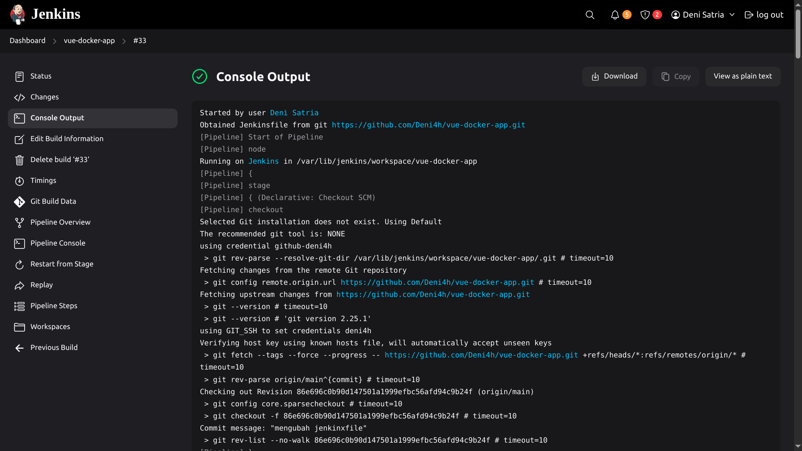
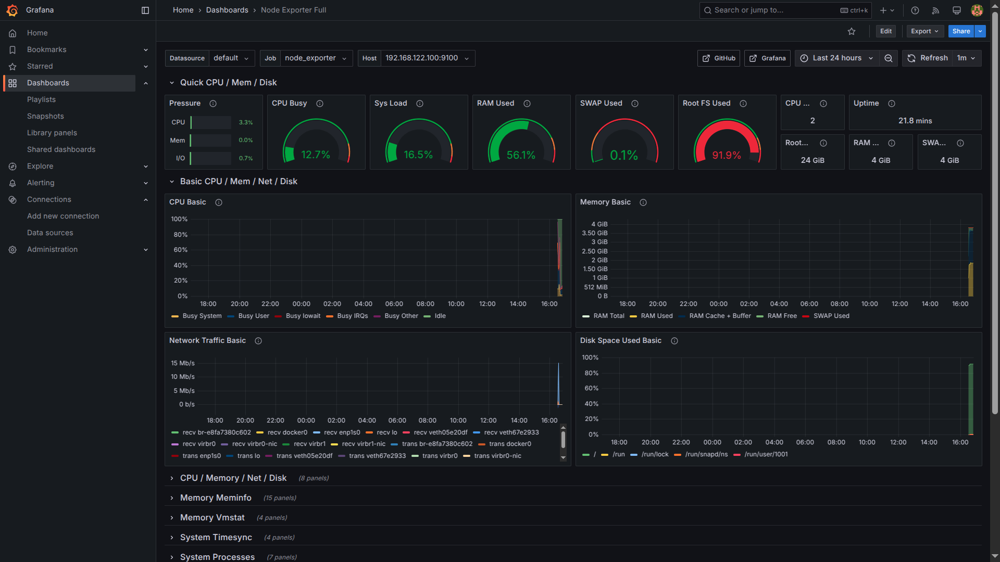
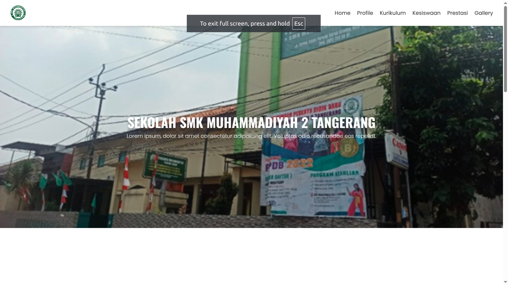

Seorang DevOps Engineer yang fokus pada otomasi, CI/CD, dan deployment infrastruktur.
Hubungi SayaSaya adalah DevOps Engineer dengan pengalaman dalam membangun pipeline CI/CD, containerisasi dengan Docker, manajemen infrastruktur dengan Ansible dan Terraform, serta monitoring menggunakan Prometheus dan Grafana. Saya suka bekerja dengan tim dan menyederhanakan proses deployment agar efisien dan scalable.
(Jenkins, GitHub Actions)
(Terraform, Ansible)
(Prometheus, Grafana)
(HTML, CSS, JavaScript)

Proyek ini menggabungkan frontend Vue.js dan backend Java Spring Boot dalam arsitektur containerized menggunakan Docker. Pipeline otomatis dibangun dengan Jenkins, mencakup proses build, test, dan deploy ke server.
Kunjungi Situs
Proyek ini berfokus pada implementasi sistem monitoring real-time menggunakan Prometheus, Node Exporter, dan Grafana. Monitoring dilakukan untuk memantau performa server seperti penggunaan CPU, memori, disk, dan jaringan secara live dan historis.

waktu disekolah saya pernah di percaya oleh guru saya untuk membuat website sekolah, Website statis yang menampilkan informasi sekolah secara lengkap dan responsif, dibuat menggunakan HTML, CSS, dan JavaScript.
Kunjungi situs